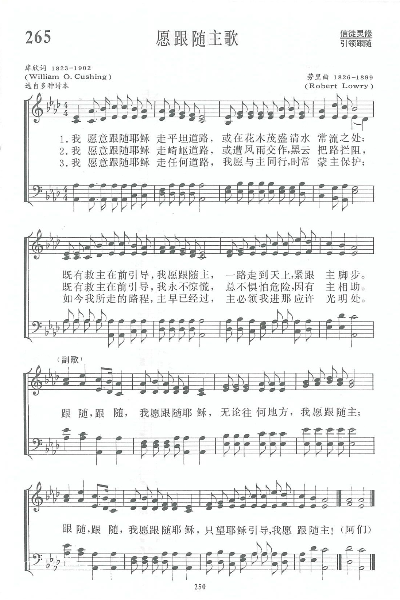

|
|
|
|
1 Down in the valley with my Saviour I would go, Refrain: 2 Down in the valley with my Saviour I would go, 3 Down in the valley, or upon the mountain steep, |
第265首《願跟隨主歌》 |
|
https://www.zanmeishige.com/tab/13938.html?songbook=1&index=265

|
|
|
|
|


https://youtu.be/ZtN_1Z4IeWU - Follow, follow, I Would Follow Jesus - Robert Lowry
- Follow On — Piano https://youtu.be/9ngs8gJlZ0Q
| Text: | Follow On |
| Author: | William O. Cushing, 1823-1902 |
| Tune: | [Down in the valley with my Savior I will go] |
| Composer: | Robert Lowry, 1826-1899 |
| Short Name: | W. O. Cushing |
| Full Name: | Cushing, W. O. (William Orcutt), 1823-1903 |
| Birth Year: | 1823 |
| Death Year: | 1903 |
Rv William Orcutt Cushing USA 1823-1903.

Born at Hingham, MA, he read the Bible as a teenager and became a follower of the Orthodox Christian school of thought. At age 18 he decided to become a minister, following in his parents theology. His first pastorate was at the Christian Church, Searsburg, NY. He married Hena Proper in 1854. She was a great help to him throughout his ministry. He ministered at several NY locations over the years, including Searsburg, Auburn, Brookley, Buffalo, and Sparta. Hena died in 1870, and he returned to Searsburg, again serving as pastor there. Working diligently with the Sunday school, he was dearly beloved by young and old. Soon after, he developed a creeping paralysis that caused him to lose his voice. He retired from ministry after 27 years. He once gave all his savings ($1000) to help a blind girl receive an education. He was instrumental in the erection of the Seminary at Starkey, NY. He gave material aid to the school for the blind at Batavia. He was mindful of the suffering of others, but oblivious to his own. After retiring, he asked God to give him something to do. He discovered he had a talent for writing and kept busy doing that. He authored about 300 hymn lyrics. The last 13 years of his life he lived with Rev. and Mrs. E. E Curtis at Lisbon Center, NY, and joined with the Wesleyan Methodist Church there. He died at Searsburg, NY.
John Perry
Tune Information
| Title: | [Down in the valley with my Savior I will go] (Lowry) |
| Composer: | Robert Lowry |
| Meter: | 12.12.12.11 |
| Incipit: | 51233 21117 65577 |
| Key: | A♭ Major |
| Copyright: | Public Domain |

第265首 愿跟随主歌 I WOULD FOLLOW ON _库欣
经文：“若有人服侍我，就当跟从我；我在哪里，服侍我的人也要在那里；若有人服侍我，我父必尊重他”(约12：26)。
这首诗是库欣牧师(事略参阅第116首)所写的比较有名的一首诗。
该诗的第一节也可以这样翻译：
我愿跟随亲爱救主同下深谷，
花卉盛开，甜蜜溪水使我得福。
有主引导我便不虑平安或艰险，
始终不渝直到我主赐冠冕。
库氏自称：“这首诗是1878年的作品，我渴望奉献一切为主使用，因主曾为我舍命，所以我愿将这一切献在主的脚前。我没有自己的打算，只想如何完成主的旨意。今后的生活只求荣耀主。本着这个思想，我用祷告来写这首诗，盼望能有更多的人被领来归主，并且奉献一切为主。
但这首诗之所以能有今天的效果，也应归功于劳里博士(见第49首注①，事略参阅第108首)所谱的曲子。”的确，这首福音诗歌的流行得力于曲调的轻快易学。
Words: William Orcutt Cushing (b. Dec. 31, 1823; d. Oct.
19, 1902)
Music: Robert Lowry (b. Mar. 12, 1826; d. Nov. 25, 1899)
Links:
Wordwise Hymns
The Cyber
Hymnal
Note: William Cushing’s parents were Unitarians (a group that does not recognize the deity of Christ), and as a boy he was taught by the Unitarian clergyman in his town. However, as he began to study the Bible for himself, he became convinced of the deity of Christ and other orthodox doctrines.
At the age of eighteen, he began to prepare for the ministry and went on to serve many years as a pastor in several churches in New York State. He had an effective ministry, and was also a great supporter of the Sunday School movement.
In 1854 he married Hena Proper and she was a help to him in his work. But Mrs. Cushing’s health failed and, after a long illness, she died in 1870. Soon after that, Pastor Cushing was seized with what a biographer calls a “creeping paralysis,” and he was forced to retire from active ministry.
But in those days of suffering his prayer was, “Lord, still give me something to do for Thee!” And God did so, turning his attention to the writing of hymns. Over the years that followed he wrote over 300 of them. One of these, created in 1878 is Follow On, the tune being provided by Baptist pastor and hymn writer Robert Lowry.
CH-1) Down in the valley with my Saviour I would go,
Where the flowers are blooming and the sweet waters flow;
Everywhere He leads me I would follow, follow on,
Walking in His footsteps till the crown be won.
Follow! follow! I would follow Jesus!
Anywhere, everywhere, I would follow on!
Follow! follow! I would follow Jesus!
Everywhere He leads me I would follow on!
Follow. The word is used over 250 times in the Bible, in one form or another. And there is a sense in which each person in society can be categorized as either a leader or a follower. In truth, we’re often both at once, with our exact position depending on the particular sphere of activity in view. For example, a man may be a leader in his church, but he may be under the authority of a boss at his workplace.
Whether we are one or the other says nothing about our personal worth. It’s a matter of administrative rank. The man referred to above is not a better or more worthy person as a leader than he is as an employee. Nor is a woman somehow inferior to her husband, because she acknowledges his headship in the home, according to the biblical pattern (cf. Eph. 5:22-23). Someone has to lead at home, and God has designed that it should be the husband.
We see the clear distinction between rank and intrinsic worth illustrated by the Lord Jesus Christ. On earth, He willingly submitted Himself to the will of God the Father. In that sense, He was a Follower. But He didn’t stop being God the Son at His incarnation. His disciples submitted to Him as their Lord (Jn. 13:13), and He accepted the worship of others (Lk. 24:51-52; Jn. 20:28).
A godly spiritual leader will understand that he is only worthy to be followed to the extent that he himself follows the Lord. The Apostle Paul made that plain. “Imitate me, just as I imitate Christ,” he said to the Corinthians (I Cor. 11:1). And “you became followers of us and of the Lord,” he said to the Thessalonians (I Thess. 1:6). The writer of Hebrews exhorts us to “imitate those who through faith and patience inherit the promises” (Heb. 6:12). But, in the end, it’s the Lord Jesus Christ whom we’re to follow or imitate.
The New Testament uses several different Greek words translated “follow” in our English Bibles. When Peter tells us that Christ left us an example, that “[we] should follow in His steps” (I Pet. 2:21), it is the Greek word epakoloutheo, meaning to follow closely, to tread in Christ’s very footsteps.
Perhaps you recall the carol, Good King Wenceslas, in which the king asks his pageboy to follow him to the cottage of a poor man, so they can provide him with food and firewood. In John Mason Neale’s words, “In his master’s steps he trod, / Where the snow lay dinted.” Just so we are to follow Christ. Some days will be rich with delightful blessings. Others will bring trials and testing. But in either instance we can be reassured in Christ’s promise, “Lo, I am with you always” (Matt. 28:20).
CH-2) Down in the valley with my Saviour I would go,
Where the storms are sweeping and the dark waters flow;
With His hand to lead me I will never, never fear,
Dangers cannot fright me if my Lord is near.
CH-3) Down in the valley, or upon the mountain steep,
Close beside my Saviour would my soul ever keep;
He will lead me safely in the path that He has trod,
Up to where they gather on the hills of God.
Questions:
1) In practical terms, what does it mean to follow Christ?
2) What are the challenges and obstacles to consistently following the Lord?
https://wordwisehymns.com/2014/06/27/follow-on/